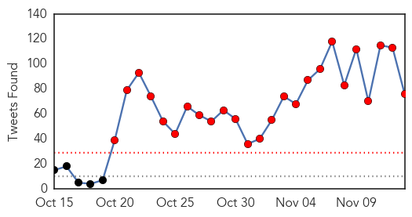
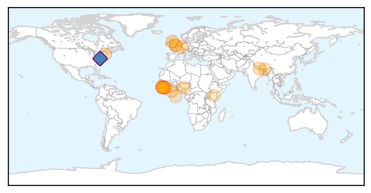

30 Day Trends
Web: 0 alerts, 1 warnings
Twitter: 29 alerts, 1 warnings
Top Articles:
- 1.000
- West Africa: Ebola Virus Disease Outbreak
- 0.999
- Low-income Brits agree to be injected with experimental Ebola vaccine for barely enough money to pay one month's rent
- 0.996
- Ask Well: Ebola and Sex
- 0.996
- When Will The True Ebola Heroes Be Recognised?
- 0.991
- West Africa's Ebola outbreak prompts changes in I.Coast cuisine
- 0.989
- As Ebola Leaves West Africa, Why Are Resources Leaving Too?
- 0.984
- Scottish Ebola nurse 'recovering'
- 0.976
- 1St test for Ebola on Brazilian coming from Guinea comes back negative
- 0.964
- Building defences against future Ebola outbreaks
- 0.961
- Ebola outbreak: A system that failed
- 0.960
- Love in the time of Ebola
- 0.958
- What is it like to do Ebola field work?
- 0.920
- Building Defences Against Future Ebola Outbreaks
- 0.909
- Ebola nurse Pauline Cafferkey released from isolation after meningitis treatment
- 0.894
- Royal Centre for Disease Control inaugurated
- 0.751
- Liberian VP Thanks Minnesotans for Goodwill During Ebola Crisis
- 0.748
- Britain ends military support for Ebola fight in West Africa
- 0.732
- Kenya, Nigeria awarded Institute of Human Virology grants
Top Tweets:
- 1.000
- Ebola virus - https://t.co/3YtvkRiFss ebola
- 0.999
- Sierra Leone: Ebola outbreak officially over - https://t.co/Qrwzd43mVV ebola
- 0.996
- Improving public health messaging on Ebola - https://t.co/p0UhHPLFgn ebola
- 0.995
- Nanotechnology Ebola sensor - https://t.co/A5utAomZt3 ebola
- 0.995
- Ebola - https://t.co/ocPerIOhak ebola
- 0.994
- UK nurse with Ebola meningitis released from isolation - https://t.co/tMgXxJ54R3 ebola
- 0.992
- Sierra Leone free of Ebola epidemic - https://t.co/RJnzKsrYqJ ebola
- 0.990
- Nurse recovers from 2nd Ebola illness - https://t.co/qbJeFYzHff ebola
- 0.990
- Ebola! West African Refugee admitted with Ebola! hospital closes down!!!!! https://t.co/KooMFiErYo
- 0.989
- Ebola remains in Guinea as Liberia and Sierra Leone Remain Free of Virus - https://t.co/XdrL3ueTXZ ebola
- 0.988
- Hospital releases Scottish Ebola nurse - https://t.co/6KaFqlVKXg ebola
- 0.988
- Ebola outbreak: A system that failed - https://t.co/hbqRQRrkFI ebola
- 0.984
- How tourism can help Sierra Leone's recovery from Ebola - https://t.co/oPnZ1XQJCD ebola
- 0.982
- Rolf Harris 'Ebola Ward Visit' After Reports Of Admittance To Stoke-On-Trent Hospital - https://t.co/LfjOQOLPex ebola
- 0.980
- Sierra Leone is Ebola-free - https://t.co/1QowCOHTDJ ebola
- 0.980
- Ebola outbreak: A system that failed - Harvard Gazette https://t.co/UtiWgk0ziD ebola EVD
- 0.979
- Hospital releases nurse who suffered Ebola complication - https://t.co/rVQc4X84Fn ebola
- 0.979
- Exxon to drill offshore post-Ebola Liberia - https://t.co/MdiwiAc8lB ebola
- 0.977
- Brazilian checked for Ebola - https://t.co/XuOzHmG6TW ebola
- 0.974
- Scottish Nurse All Clear From Ebola - https://t.co/BiNw9xJuHA ebola
- 0.974
- EBOLA!!!! BREAKING!!!!! REFUGEE WITH EBOLA HOSPITAL CLOSES https://t.co/zBbfJ7Tj7N
- 0.972
- This is Nubia, MSF's last-known Ebola patient in Conarky - https://t.co/GRfzBJJals ebola
- 0.970
- EBOLA!!!! BREAKING! HOSPITAL CLOSES REFUGEE ADMITTED WITH EBOLA https://t.co/zBbfJ7Tj7N
- 0.970
- EBOLA!!!! BREAKING! HOSPITAL CLOSES REFUGEE ADMITTED WITH EBOLA https://t.co/zBbfJ7Tj7N
- 0.970
- EBOLA!!!! BREAKING! HOSPITAL CLOSES REFUGEE ADMITTED WITH EBOLA https://t.co/zBbfJ7Tj7N
- 0.970
- EBOLA!!!! BREAKING! HOSPITAL CLOSES REFUGEE ADMITTED WITH EBOLA https://t.co/zBbfJ7Tj7N
- 0.970
- EBOLA!!!! BREAKING! HOSPITAL CLOSES REFUGEE ADMITTED WITH EBOLA https://t.co/zBbfJ7Tj7N
- 0.970
- EBOLA!!!! BREAKING! HOSPITAL CLOSES REFUGEE ADMITTED WITH EBOLA https://t.co/zBbfJ7Tj7N
- 0.970
- EBOLA!!!! BREAKING! HOSPITAL CLOSES REFUGEE ADMITTED WITH EBOLA https://t.co/zBbfJ7Tj7N
- 0.970
- EBOLA!!!! BREAKING! HOSPITAL CLOSES REFUGEE ADMITTED WITH EBOLA https://t.co/zBbfJ7Tj7N
- 0.970
- EBOLA!!!! BREAKING! HOSPITAL CLOSES REFUGEE ADMITTED WITH EBOLA https://t.co/zBbfJ7Tj7N
- 0.970
- EBOLA!!!! BREAKING! HOSPITAL CLOSES REFUGEE ADMITTED WITH EBOLA https://t.co/zBbfJ7Tj7N
- 0.969
- ACP Group welcomes Sierra Leone's ebola-free status - https://t.co/4wASvRh9Yb ebola
- 0.964
- British Ebola Nurse Released From Isolation In - https://t.co/RIwlCWGydV ebola
- 0.962
- Sierra Leone Says Bye-Bye To Ebola With Rap Song And Hip Dance Moves - https://t.co/EpaXcRwE0l ebola
- 0.962
- Scottish Nurse with Second Ebola Infection Recovering - https://t.co/av6gLKtZV5 ebola
- 0.962
- Florida International University Researchers Propose Rapid Ebola Test Using Nanotechnology - https://t.co/Hcv1oLf2kT ebola
- 0.961
- How tourism can help Sierra Leone's recovery from Ebola - The Independent https://t.co/SIqYKgEcBy ebola EVD
- 0.960
- Britain ends military support for Ebola fight in West Africa - https://t.co/y03wfJUO2s ebola
- 0.958
- Building Defences Against Future Ebola Outbreaks - https://t.co/aK0ERPZVJn ebola
- 0.957
- Parliament endorses Ebola vaccine trial - https://t.co/X4Cz0R24nf ebola
- 0.956
- CORRECTED-Exxon Mobil to drill offshore post-Ebola Liberia - https://t.co/6ULYjVIlYY ebola
- 0.954
- CORRECTED-Exxon Mobil to drill offshore post-Ebola Liberia - Reuters https://t.co/Fqhmbjao7q ebola EVD
- 0.953
- Sierra Leone officially declared 'Ebola free' - https://t.co/Vvw9qErRfP ebola
- 0.953
- From Ebola survivor to motherhood - https://t.co/tyldaP9X98 ebola
- 0.951
- Ghana FDA approves vaccine for Ebola clinical trials - https://t.co/c7Mf2ttNLa ebola
- 0.948
- Well | Ask Well: Ebola and Sex - https://t.co/useKTrtRxE ebola
- 0.944
- Faith Leaders fight Ebola - https://t.co/s2a1343OZH ebola
- 0.940
- Woman in Africa Survives Double Whammy of Ebola, Stroke - Yahoo News https://t.co/uVzCn6UMk9 ebola EVD
- 0.939
- Sierra Leone Celebrates Kicking Out Ebola With Rap Song and Catchy Dance - https://t.co/0oH2QZ4E3F ebola
Showing top 50 tweets...
Web/News Articles

Tweets
Article Locations
Article Confidences